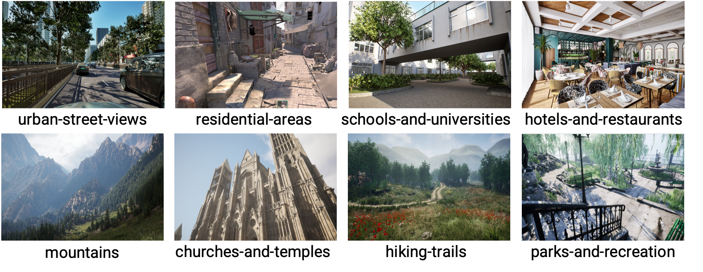
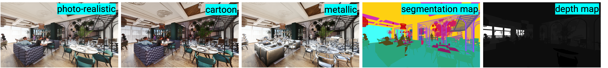

<!DOCTYPE html>
<html lang="en">
<head>
    <meta charset="UTF-8">
    <meta name="viewport" content="width=device-width, initial-scale=1.0">
    <title>Challenges - Rich Media with Generative AI</title>
    <style>
        body {
            font-family: Arial, sans-serif;
            margin: 0;
            padding: 0;
            background: #ffffff;
            color: #111;
        }
        header {
            background-color: rgba(24, 86, 45, 0.9);
            color: #f8f9fa;
            padding: 15px;
            text-align: center;
            font-size: 24px;
        }
        nav {
            display: flex;
            justify-content: center;
            background-color: rgba(24, 86, 45, 0.9);
            position: sticky;
            top: 0;
            z-index: 1000;
        }
        nav a {
            color: #f8f9fa;
            text-decoration: none;
            padding: 14px 20px;
            display: block;
        }
        nav a:hover {
            background-color: rgba(220, 225, 228, 0.7);
            color: #18562d;
        }
        .container {
            padding: 20px;
            max-width: 1000px;
            margin: auto;
            background-color: rgba(220, 225, 228, 0.7);
            border-radius: 10px;
            margin-top: 50px;
        }
        h2 {
            color: #003366;
        }
    </style>
</head>
<body>
    <header>Challenges - Rich Media with Generative AI</header>
    <nav>
        <a href="index.html">Home</a>
        <a href="dates.html">Important Dates</a>
        <a href="speakers.html">Invited Speakers</a>
        <a href="papers.html">Papers</a>
        <a href="challenges.html">Challenges</a>
        <a href="program.html">Program</a>
        <a href="organizers.html">Organizers</a>
    </nav>
    <div class="container">
        <h2>Challenge Overview</h2>
        <p style="text-align: justify; text-align-last: left;">The workshop features four distinct challenge tracks, focusing on media generation and 
            transmission with GAI. Track 1~3 target reducing computation and transmission for efficient 
            media delivery, and Track 4 targets controlled novel content creation.</p>
            <p style="text-align: justify; text-align-last: left;">A large-scale multi-modality multi-view dataset, named M<sup>3</sup>VIR, is provided, 
            featuring computer-synthesized virtual content. M<sup>3</sup>VIR further
            comprises two subsets, a multi-resolution subset M<sup>3</sup>VIR_MR for track 1~3 and 
            a multi-style subset M<sup>3</sup>VIR_MS for track 4. The entire M<sup>3</sup>VIR dataset 
            covers 80 scenes from 8 categories (examples shown below), 10 scenes in each category. 
            The UE5 Unreal Engine is employed where for each scene a variety of videos are simulated with 
            matching content to serve as ground-truth for the competition tasks.</p>

            
                        
            
        <h2>Track 1~3</h2>
        <p style="text-align: justify; text-align-last: left;">GAI has reshaped media delivery solutions 
            for gaming and entertainment by reducing rendering and transmission costs. For example, 
            in cloud gaming, server-side computation and transmission needs can be largely reduced by 
            rendering low-resolution (LR) frames and computing high-resolution (HR) frames on client side. 
            For immersive applications, only reference views need to be rendered by server, and the 
            remaining views are computed by client. NVIDIA's Deep Learning Super Sampling (DLSS) 
            commercializes such solutions by a suite of GAI-based tools including multi-frame generation,
            enhanced ray reconstruction and super resolution (SR). The key to its success is the
            large-scale ground-truth LR-HR or multi-view simulated data for training.
            In contrast, the research community generally uses pseudo training data for restoration tasks, 
            e.g., by downsampling and degrading HR data to generate paired pseudo LR
            data for SR research. Due to characteristics and limitations of the rendering process,
            such pseudo data do not match real simulated data, leading to inferior performance.
            Therefore, M<sup>3</sup>VIR_MR provides ground-truth LR-HR paired frames to facilitate
            restoration research in track 1 ~ 3.</p>
        
        <h3>Track 1: Super-Resolution</h3>
        <p style="text-align: justify; text-align-last: left;">To support the media delivery solution of transferring
            LR frames and restoring HR frames by client. The segmentation map and depth map
            can be leveraged to enhance performance.  M<sup>3</sup>VIR_MR supports 2x and 3x SR, i.e., from 960x540
            to 1920x1080 and from 960x540 to 2880x1620.</p>

        <h3>Track 2: Novel View Synthesis</h3>
        <p style="text-align: justify; text-align-last: left;">To support the solution of transferring part
            of multi-view frames and generating the remaining frames by client. The task is to
            synthesize intermediate RGB frames from a sparse set of reference RGB frames in
            multi-view videos. Only 1920x1080 videos with static scenes in M<sup>3</sup>VIR_MR are used for Track 2.</p>

        <h3>Track 3: Novel View Synthesis & Super-Resolution</h3>
        <p style="text-align: justify; text-align-last: left;">A combination of
            track 1 & 2 to support the solution of transferring part of multi-view LR frames and
            generating all HR frames by client. Track 3 also uses the videos with static scenes in  M<sup>3</sup>VIR_MR same as Track 2, 
            but with all 3 different resolutions to support 2x and 3x SR</p>

        <h3>Evaluation</h3>            
        <p style="text-align: justify; text-align-last: left;">
            Algorithms for track 1 ~ 3 will be evaluated based on objective metrics including
            PSNR, SSIM, LPIPS and FID. The corresponding segmentation maps and depth maps
            can be leveraged to improve performance. The amount of additional segmentation
            and/or depth map used will also be considered for evaluation (the more information
            used, the more transmission bits consumed).</p>
        
        <h2>Track 4</h2>
        <p style="text-align: justify; text-align-last: left;">GAI holds great promise for generating fast and accessible videos to train vision models,
            with particular importance for robotics and embodied AI where real-world data are
            scare and expensive to obtain. Controlling generated content to ensure spatial-temporal
            consistency and physical accuracy is crucial such applications. While text-to-image
            generation has been successful, text-to-video generation is inherently challenging due
            to the limitations of text in describing video content. In contrast, multi-modal guidance
            including both visual and text descriptions are more accurate and efficient.</p>

        <p style="text-align: justify; text-align-last: left;"> Track 4 focuses on controlled video generation using ground-truth data from M<sup>3</sup>VIR_MS.
            The target is to edit specific objects in a photo-realistic video by spatial-temporal consistently changing the style of objects (to cartoon style or to metallic style). 
            Track 4 focus on a several foreground object categories: people, animals, cars, tables, coach-chairs, lights-lamps, etc. M<sup>3</sup>VIR_MS enables training and evaluating
            content editing methods with ground-truth paired data. To reduce the difficulty of this challenging task and accommodate different possible solutions, only data samples
             corresponding to the static scenes are used for evaluation. </p>
             
        <p style="text-align: justify; text-align-last: left;">Performance will be evaluated based on both objective quality metrics including PSNR, SSIM, LPIPS
            and FID, as well as temporal consistency metrics like deep video prior.</p>

        
        <h2>Datasets</h2>
        <p>Two datasets will be used for the challenges, each with a training (64 scenes) and test (16 scenes) partition. 
            Due to the large size, a small mini training set will be provided for track 1, and participants can optionally use the full training dataset to 
            enhance their performance. Training set will be released in 4 batches, roughly 20 scenes in each batch, scheduled around April 15, April 25, May 05, and May 17. 
            Test set will be relased in June. </p>
        
        <h3>M<sup>3</sup>VIR_MR</h3>
        <p style="text-align: justify; text-align-last: left;">For each of the 80 scenes, 3 sets of multi-modal 
            multi-view data packages are collected: dynamic scene with static camera; static scene with moving camera;
            dynamic scene with moving camera. Each set of data package comprises 6 sets of temporally synchronized 
            RGB videos from co-located cameras with 6 views. Each of the 6 sets further has videos at 3 different 
            resolutions: 960x540, 1920x1080, 2880x1620. In addition to RGB images, the corresponding pixel-level 
            synchronized semantic segmentation map and depth map are also provided. Each video is 2-sec long at 15fps.
            In total, M<sup>3</sup>VIR_MR has 43200 data samples from 1440 sets of videos, each data sample
            consisting of matching RGB images, segmentation maps and depth maps at 3 different
            resolutions. The corresponding intrinsic and 6-DoF extrinsic camera parameters for
            each frame are also provided. One data sample is shown below. 
            64 scenes are used for training and 16 scenes are used for testing.</p>
            
                        
            
            <p style="text-align: justify; text-align-last: left;">For track 1, the mini training set comprises randomly sampled 10% data samples 
                (3456 data samples from 34560 training data samples), each data sample consisting of matching RGB images, depth and segmentaion maps at 3 resolutions.
            </p>            

            <p style="text-align: justify; text-align-last: left;">For track 2, only videos corresponding to static scene 
                with moving camera at 1080p resolution are used. Each data sample consisting of matching RGB images, depth and segmentaion maps at 1080p.</p>            

            <p style="text-align: justify; text-align-last: left;">For track 3, only videos corresponding to static scene 
                with moving camera are used. Each data sample consisting of matching RGB images, depth and segmentaion maps at 3 resolutions.</p>            

            <p><strong>M<sup>3</sup>VIR_MR training set part 1 (Track 1 mini set, Track 2 Full set, Track 3 Full set):</strong> <a href="#">https://huggingface.co/datasets/guluthemonster/M3VIR</a></p>

        <h3>M<sup>3</sup>VIR_MS</h3>
        <p style="text-align: justify; text-align-last: left;">The multi-style M3VIR_MS dataset aims to facilitate research on controlled video generation. From the 
            54000 data samples in the above M<sup>3</sup>VIR_MR, 
            videos with 1920x1080 resolution are taken out, and for each video, a cartoon-style video and a metallic-style video are rendered with the same geometry. 
            That is, M<sup>3</sup>VIR_MS contains 43200 data samples, each comprising 3 videos having matching geometry at the frame level and with 3 styles, photo-realistic, 
            cartoon, and metallic, as well as the corresponding segmentation map, depth map, and camera intrinsic and extrinsic parameters. An example is shown below. 
            Same as M<sup>3</sup>VIR_MR, 64 scenes are used for training and 16 scenes are used for testing.</p>
            
                                  
            
            <p><strong>M<sup>3</sup>VIR_MS training set part 1:</strong> <a href="#">https://huggingface.co/datasets/guluthemonster/M3VIR</a></p> 
                    

    <p style="text-align: justify; text-align-last: left;">For all tracks, the dataset also contains the camera intrinsic and extrinsic parameters</p>            

            
    <p><strong>Test sets:</strong> <a href="#">[To be provided]</a></p>

    </div>
</body>
</html>
